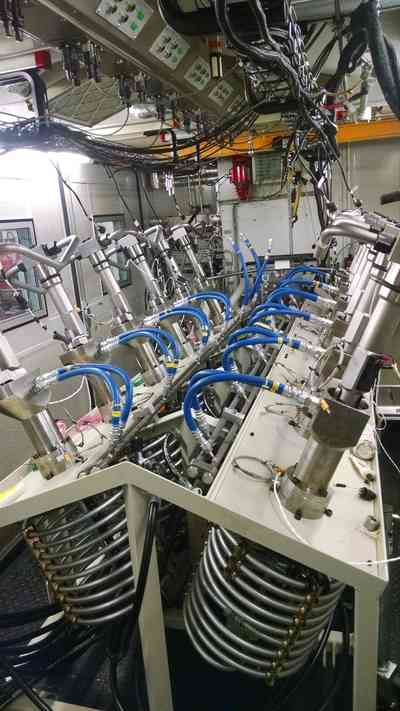

<div class="modal-dialog">
  <div class="modal-content">
    <div class="modal-header">
          <h4 class="modal-title text-center" id="myModalLabel">Labview Project : Automated Data Acquisition System</h4>
    </div>
    <div class="modal-body">
        <figure class="modalFig">
          <picture>
            <source media="(min-width: 700px)" srcset="img/LV_AUTDAQ_multiINJcell2-large.jpg" />
            
          </picture>
        </figure>
        <figure class="modalFig">
          <picture>
            <source media="(min-width: 700px)" srcset="img/LV_AUTDAQ_multiINJcell-large.jpg" />
            
          </picture>
        </figure>
        <figure class="modalFig">
          <picture>
            <source media="(min-width: 700px)" srcset="img/LV_AUTDAQ_DFSsys-large.jpg" />
            
          </picture>
        </figure>
    </div>
    <div class="modal-footer">
        <button type="button" class="btn btn-default" data-dismiss="modal">Close</button>
    </div>
  </div>
</div>
